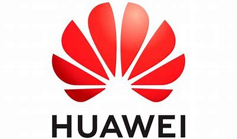
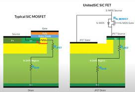

Huawei called on the ICT industry players to create a level playing field for all people, not just their own employees in its first White Paper on Approaches to Fairness, Equity & Opportunity at their Women in Tech event held at the Peter Drucker Forum.....
Date: 2022/12/02
Silicon carbide power devices provide several advantages over their silicon counterparts in power-conversion efficiency, improved high-temperature performance, and use of simpler circuit topologies. In some key application areas in high demand, such as electric-vehicle traction inverters, DC/DC converters, and on-board chargers (OBCs), the device-specific on-state resistance (RDS(on) × A, where A is the conduction area) is a key figure of merit (FOM) that affects device capacitance and hence efficiency in both hard-switching (HS) and soft-switching (SS) topologies. As fast-charging standards for EVs migrate toward higher voltages and higher power, a number of devices may be needed to be paralleled to, which can lead to system-level challenges in managing devices that may not be well matched in terms of their performance over time and temperature. Hence, lower-RDS(on) devices in low-thermal–resistance packages offer advantages in these high-power applications....
Date: 2022/12/01
